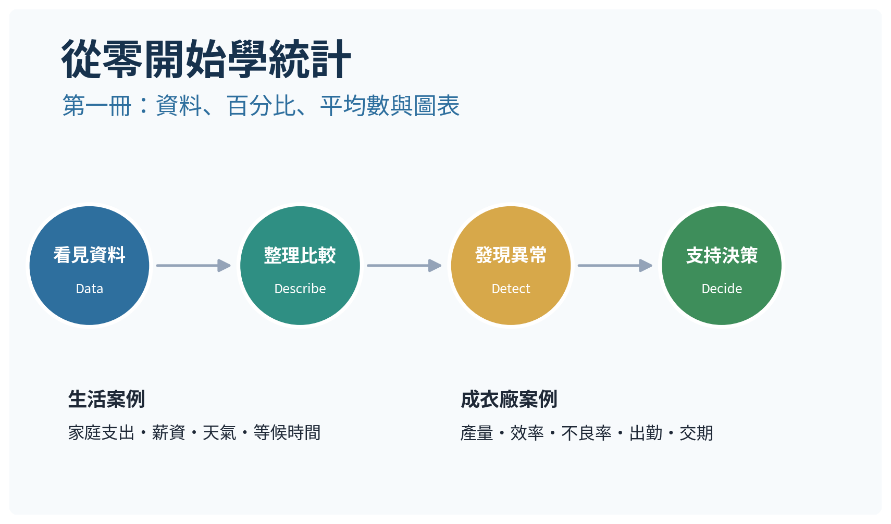
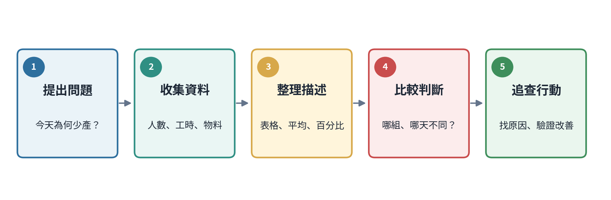
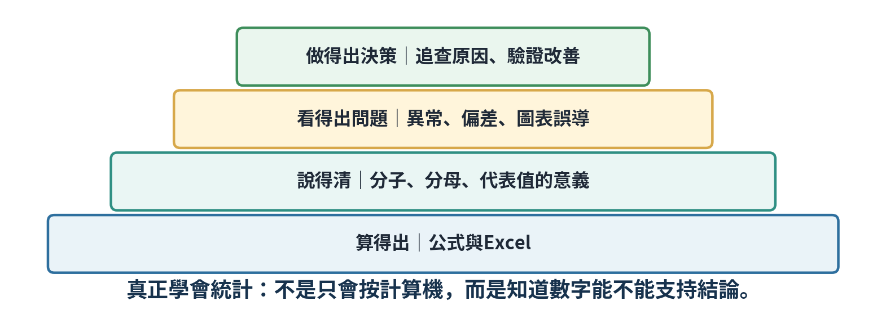
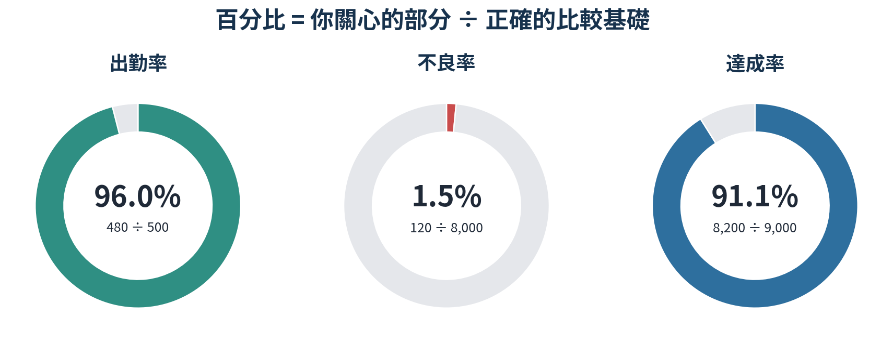
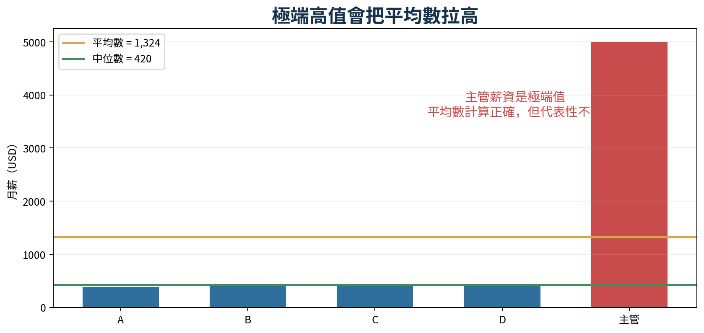
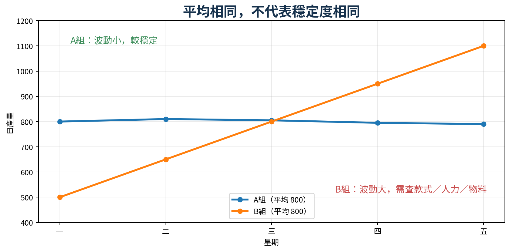
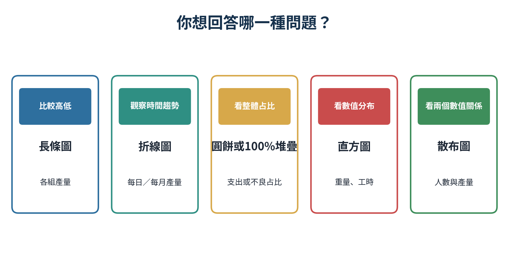
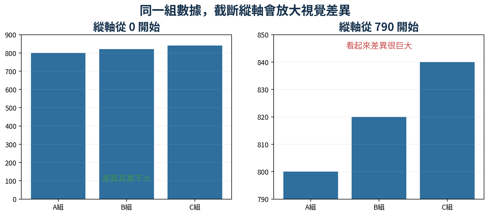
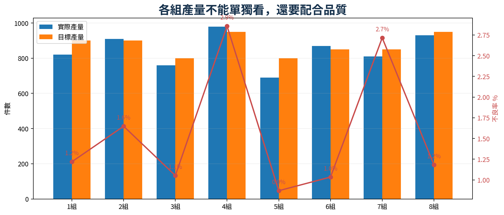

從零開始學統計
第一冊｜資料、百分比、平均數與圖表判讀
用生活與成衣廠最常見的例子，一步一步學到能實際判斷數據

| 定位 | 本冊不是數學考試教材 目標是讓完全沒有統計基礎的人，能看懂報表、發現數據問題、知道該追查什麼。公式只保留真正會用到的部分。 |
|---|
中文解說＋英文名詞｜Excel同步練習｜含測驗與答案
每一個觀念都依照「先看情境、再看數據、接著理解公式、最後做管理判斷」的順序。不要先背英文或公式；先用自己的話說清楚數字的意義。

圖 1 統計不是計算終點，而是一個從問題走向行動的流程。
| 步驟 | 你要做什麼 | 不要做什麼 |
|---|---|---|
| 1. 看情境 | 先讀問題，確認要回答什麼 | 看到數字立刻按計算機 |
| 2. 找資料角色 | 找出分子、分母、時間、單位與對象 | 把不同單位或不同期間直接比較 |
| 3. 計算／畫圖 | 用最簡單的公式與圖表整理 | 為了好看而使用複雜圖表 |
| 4. 解釋結果 | 用一句完整中文說明數字 | 只報「96%」而不說96%是什麼 |
| 5. 決定下一步 | 指出正常、異常或需追查項目 | 把相關當成原因，直接下結論 |
| 操作 | 與 Excel 練習簿配合 看到黃色儲存格時，可以自行更改數字；公式與圖表會自動更新。先預測結果，再輸入數據，學習效果最好。 |
|---|
| 章節 | 主題 | 學完能做什麼 |
|---|---|---|
| 第1章 | 資料概念 Data Basics | 什麼是資料、母體、樣本與資料類型 |
| 第2章 | 百分比與比率 Percentages & Rates | 找對分子與分母，避免率的誤判 |
| 第3章 | 平均數、中位數與眾數 | 選擇合適的代表值，理解極端值 |
| 第4章 | 圖表判讀 Chart Literacy | 選對圖、看懂軸、辨識視覺誤導 |
| 第5章 | 車縫組綜合案例 | 用產量、人數、目標與品質做管理判斷 |
| 第6章 | 測驗、答案與名詞表 | 確認理解並建立常用中英詞彙 |
| 標準 | 學習完成標準 不是「看過」就算完成。你需要做到：①能用自己的話解釋；②能在Excel中算出；③能指出數字可能誤導之處；④能提出下一個要追查的問題。 |
|---|

| 第 1 章 資料概念 |
|---|
| Data Basics｜先知道資料是誰、從哪裡來、能回答什麼 |
統計學（Statistics）是一套把零散資料轉成可理解資訊，並用來支持判斷的方法。它不保證你永遠得到正確答案，但能讓你的結論更透明、更有依據。
| 白話 | 一句話理解 統計 = 用資料降低「憑感覺決定」的程度。 |
|---|
| 例子 | 資料類型 | 英文 | 能不能直接算平均 | 合適整理方式 |
|---|---|---|---|---|
| 車縫組別：1組、2組、3組 | 類別資料 | Categorical data | 不能 | 次數表、長條圖 |
| 每日產量：820、900、875件 | 數值資料 | Numerical data | 可以 | 平均、範圍、折線圖 |
| 品質等級：A、B、C | 有順序類別 | Ordinal data | 通常不直接平均 | 次數表、長條圖 |
| 產品重量：198.2、201.4克 | 連續數值 | Continuous data | 可以 | 平均、直方圖 |
| 不良件數：0、1、2件 | 離散數值 | Discrete data | 可以 | 次數、平均、不良率 |
| 錯誤 | 常見錯誤 組別雖然寫成1、2、3，但這些數字只是名稱。把組別平均成「2.3組」通常沒有管理意義。 |
|---|
母體（Population）是你真正想了解的全部對象；樣本（Sample）是從母體中實際取得的一部分。
| 情境 | 母體 | 樣本 | 主要風險 |
|---|---|---|---|
| 了解全廠員工滿意度 | 全廠所有員工 | 只訪問辦公室10人 | 樣本無法代表大量產線員工 |
| 估計整批成衣不良率 | 整批10,000件 | 各箱隨機抽查共300件 | 若抽樣分散，偏差通常較低 |
| 了解食堂口味 | 所有用餐員工 | 只問最早到食堂的20人 | 時間與人群可能集中 |
| 提醒 | 樣本偏差 Sampling Bias 如果被抽到的人或產品，和整體有系統性的不同，樣本再大也可能得到錯誤結論。例如只抽最上層的成衣，無法代表整箱。 |
|---|
| 層次 | 例子 | 用途 |
|---|---|---|
| 原始資料 Raw data | 每天每組的出勤、產量、不良件數 | 保留細節，可重新分析 |
| 整理資料 Summary | 每組月產量、平均出勤、總不良 | 快速掌握全貌 |
| 指標 KPI / Metric | 達成率、不良率、人均產出 | 比較表現與追蹤變化 |
| 管理 | 管理原則 報表只剩總數而沒有原始明細時，很難驗證計算、追查異常或重新分類。統計分析必須保留可追溯的原始資料。 |
|---|
思考：員工編號屬於類別資料還是數值資料？為什麼？
你的答案：＿＿＿＿＿＿＿＿＿＿＿＿＿＿＿＿＿＿＿＿＿＿＿＿＿＿＿＿＿＿＿＿＿＿＿＿＿＿＿＿＿＿＿＿＿
思考：若要估計整批貨的不良率，應如何避免只抽到同一箱或同一位置？
你的答案：＿＿＿＿＿＿＿＿＿＿＿＿＿＿＿＿＿＿＿＿＿＿＿＿＿＿＿＿＿＿＿＿＿＿＿＿＿＿＿＿＿＿＿＿＿
思考：每日產量與產品顏色，哪一個適合計算平均數？
你的答案：＿＿＿＿＿＿＿＿＿＿＿＿＿＿＿＿＿＿＿＿＿＿＿＿＿＿＿＿＿＿＿＿＿＿＿＿＿＿＿＿＿＿＿＿＿
| 第 2 章 百分比、比例與率 |
|---|
| Percentages, Proportions & Rates｜百分比最常見，也最容易因分母選錯而誤導 |
計算百分比前，先用中文說出「誰占誰」。你關心的部分是分子，完整的比較基礎是分母。
| 基本百分比 Percentage |
|---|
百分比 = 部分 ÷ 整體 × 100% 先確認分子與分母的單位、期間和對象一致。 |

圖 2 三種常見比例：出勤率、不良率與達成率。
| 指標 | 分子 | 分母 | 例子 | 解釋 |
|---|---|---|---|---|
| 出勤率 | 實際出勤人數 | 應出勤人數 | 480 ÷ 500 = 96% | 每100名應出勤者，約96名實際出勤 |
| 不良率 | 不良件數 | 實際檢查件數 | 120 ÷ 8,000 = 1.5% | 每100件檢查品，約1.5件不良 |
| 達成率 | 實際完成量 | 目標量 | 8,200 ÷ 9,000 = 91.1% | 完成目標的91.1% |
| 加班占比 | 加班人數 | 當日出勤人數 | 150 ÷ 480 = 31.3% | 當日出勤者中31.3%加班 |
| 判斷 | 達成率可以超過100% 實際值大於目標時，達成率自然超過100%。但出勤率、不良率或人員占比通常不應超過100%，超過時先檢查定義或資料。 |
|---|
| 月份 | 不良件數 | 檢查件數 | 不良率 | 真正結論 |
|---|---|---|---|---|
| 6月 | 120 | 8,000 | 1.50% | 基準 |
| 7月 | 100 | 5,000 | 2.00% | 不良件數少了，但不良率反而上升 |
| 陷阱 | 分母效應 Denominator Effect 只比較件數會忽略工作量或檢查量。產量減少時，不良件數可能下降，但品質未必改善。 |
|---|
舊不良率3.0%，新不良率2.1%。
| 百分點差 Percentage-point difference |
|---|
3.0% − 2.1% = 0.9 個百分點 用來描述兩個百分率直接相減。 |
| 相對改善率 Relative improvement |
|---|
(3.0% − 2.1%) ÷ 3.0% = 30% 表示相對於原來3.0%，改善了30%。 |
| 寫法 | 報告應寫清楚 建議寫成：「不良率由3.0%降至2.1%，下降0.9個百分點，相對改善30%。」不要只寫「下降30%」而沒有舊值與新值。 |
|---|
| 檢查項目 | 你要問的問題 |
|---|---|
| 對象一致嗎？ | 分子和分母是不是同一批人、同一批貨？ |
| 期間一致嗎？ | 分子是每日，分母卻是每月嗎？ |
| 單位一致嗎？ | 件數、箱數、公斤是否混用？ |
| 分母合理嗎？ | 問題問「占支出」卻除以收入嗎？ |
| 基礎量夠大嗎？ | 1件不良／10件與10件／1,000件，不確定程度不同 |
思考：應出勤500人、缺勤18人，缺勤率是多少？請用完整中文解釋。
你的答案：＿＿＿＿＿＿＿＿＿＿＿＿＿＿＿＿＿＿＿＿＿＿＿＿＿＿＿＿＿＿＿＿＿＿＿＿＿＿＿＿＿＿＿＿＿
思考：訂單10,000件，已完成7,600件。完成率與未完成件數各是多少？
你的答案：＿＿＿＿＿＿＿＿＿＿＿＿＿＿＿＿＿＿＿＿＿＿＿＿＿＿＿＿＿＿＿＿＿＿＿＿＿＿＿＿＿＿＿＿＿
思考：不良率從4%降到3%，是下降1個百分點，還是改善25%？兩種說法都寫出來。
你的答案：＿＿＿＿＿＿＿＿＿＿＿＿＿＿＿＿＿＿＿＿＿＿＿＿＿＿＿＿＿＿＿＿＿＿＿＿＿＿＿＿＿＿＿＿＿
| 第 3 章 平均數、中位數與眾數 |
|---|
| Mean, Median & Mode｜「平均」不一定代表一般人，也不一定代表穩定 |
| 代表值 | 英文 | 怎麼找 | 適合回答 | 主要限制 |
|---|---|---|---|---|
| 平均數 | Mean | 全部加總 ÷ 個數 | 整體平均水準 | 容易受極端值影響 |
| 中位數 | Median | 排序後位於中間 | 一般或典型水準 | 不反映每個數值距離 |
| 眾數 | Mode | 出現次數最多 | 最常見類別或數值 | 可能沒有或不只一個 |
| 平均數 Arithmetic Mean |
|---|
平均數 = 所有數值加總 ÷ 數值個數 Excel：=AVERAGE(範圍) |
| 人員 | A | B | C | D | 主管 |
|---|---|---|---|---|---|
| 月薪 USD | 380 | 400 | 420 | 420 | 5,000 |

圖 3 主管的高薪將平均數拉到1,324美元，但一般員工都不超過420美元。
| 統計量 | 結果 | 適合的解釋 |
|---|---|---|
| 平均數 Mean | $1,324 | 全部薪資平均分配後的數字，但不代表一般員工 |
| 中位數 Median | $420 | 排序後中間值，較接近典型員工 |
| 眾數 Mode | $420 | 最常出現的薪資 |
| 選擇 | 重點 平均數沒有算錯；錯的是把它用來回答不合適的問題。看房價、薪資、交期延誤等偏斜資料時，中位數通常更有代表性。 |
|---|

圖 4 A組與B組五天平均都是800件，但B組波動更大。
| 組別 | 五日產量 | 平均 | 全距（最大−最小） | 管理判斷 |
|---|---|---|---|---|
| A組 | 800、810、805、795、790 | 800 | 20 | 穩定，可進一步看是否能提升平均 |
| B組 | 500、650、800、950、1,100 | 800 | 600 | 平均相同但不穩定，先查條件變化 |
| 全距 Range |
|---|
全距 = 最大值 − 最小值 它是最簡單的波動指標，但只使用最高與最低兩個數。 |
| 延伸 | 下一冊預告 後續會學變異數與標準差（Standard Deviation）：用全部數據衡量波動，比全距更完整。 |
|---|
| 資料情況 | 優先考慮 | 例子 |
|---|---|---|
| 數據大致對稱、沒有明顯極端值 | 平均數 | 正常穩定的每日工時 |
| 有極端高值或低值、資料明顯偏斜 | 中位數 | 薪資、房價、延遲天數 |
| 想知道最常見類別或尺寸 | 眾數 | 最常見衣服尺寸、最常見缺陷 |
| 要判斷穩定度 | 平均＋全距／標準差 | 生產組每日產量 |
思考：五筆交期延誤為0、1、1、2、30天。平均數與中位數哪個更能代表一般訂單？
你的答案：＿＿＿＿＿＿＿＿＿＿＿＿＿＿＿＿＿＿＿＿＿＿＿＿＿＿＿＿＿＿＿＿＿＿＿＿＿＿＿＿＿＿＿＿＿
思考：兩組平均產量都為900件，能否直接判定表現一樣？還需要看什麼？
你的答案：＿＿＿＿＿＿＿＿＿＿＿＿＿＿＿＿＿＿＿＿＿＿＿＿＿＿＿＿＿＿＿＿＿＿＿＿＿＿＿＿＿＿＿＿＿
思考：尺寸M、L、L、XL、L、M，眾數是多少？它能回答什麼問題？
你的答案：＿＿＿＿＿＿＿＿＿＿＿＿＿＿＿＿＿＿＿＿＿＿＿＿＿＿＿＿＿＿＿＿＿＿＿＿＿＿＿＿＿＿＿＿＿
| 第 4 章 圖表判讀 |
|---|
| Chart Literacy｜圖表的任務是讓關係更清楚，不是讓差異看起來更大 |

圖 5 圖表選擇取決於你要回答的問題。
| 問題類型 | 推薦圖表 | 典型例子 | 注意事項 |
|---|---|---|---|
| 比較不同類別高低 | 長條圖 Bar chart | 各組產量、各類不良件數 | 類別太多時難讀 |
| 觀察隨時間變化 | 折線圖 Line chart | 每日產量、每月成本 | 時間順序不可打亂 |
| 看整體由哪些部分組成 | 圓餅／100%堆疊圖 | 支出占比、客戶占比 | 類別不宜過多 |
| 看數值集中與分散 | 直方圖 Histogram | 產品重量、工時分布 | 不是一般長條圖 |
| 看兩個數值是否一起變 | 散布圖 Scatter plot | 人數與產量 | 相關不等於因果 |
| 問題 | 檢查內容 |
|---|---|
| 標題說的是什麼？ | 是否明確寫出指標、對象與期間？ |
| 橫軸與縱軸是什麼？ | 單位是件、人、美元、百分比還是天？ |
| 縱軸從哪裡開始？ | 不從0開始是否刻意放大差異？ |
| 資料期間完整嗎？ | 是否只挑有利月份，忽略前後趨勢？ |
| 結論被原始數據支持嗎？ | 圖形看起來相關，但是否還有其他原因？ |

圖 6 相同的800、820、840，因縱軸範圍不同而產生完全不同的視覺感受。
| 判讀 | 截斷縱軸不一定錯 在需要觀察小幅波動的工程圖表中，縮小縱軸範圍有時合理；但必須清楚標示，不能讓讀者誤以為差距非常巨大。 |
|---|
如果出勤人數增加時，產量也常增加，兩者可能有正相關（Positive Correlation）。但這不代表「只要加人就一定增加同樣比例的產量」。款式難度、物料、機台、技能與加班都可能同時影響結果。
| 限制 | 因果判斷 Causation 要說A造成B，通常需要更完整的設計與證據，例如控制其他條件、比較改善前後，或使用隨機實驗。單一散布圖通常只能說「有關係」。 |
|---|
思考：想呈現六個月的產量趨勢，應選長條圖還是折線圖？為什麼？
你的答案：＿＿＿＿＿＿＿＿＿＿＿＿＿＿＿＿＿＿＿＿＿＿＿＿＿＿＿＿＿＿＿＿＿＿＿＿＿＿＿＿＿＿＿＿＿
思考：看到圖表顯示A組比B組高很多，你最先檢查哪三項？
你的答案：＿＿＿＿＿＿＿＿＿＿＿＿＿＿＿＿＿＿＿＿＿＿＿＿＿＿＿＿＿＿＿＿＿＿＿＿＿＿＿＿＿＿＿＿＿
思考：人數與產量呈正相關，是否可以直接說增加10%人數就會增加10%產量？
你的答案：＿＿＿＿＿＿＿＿＿＿＿＿＿＿＿＿＿＿＿＿＿＿＿＿＿＿＿＿＿＿＿＿＿＿＿＿＿＿＿＿＿＿＿＿＿
| 第 5 章 車縫組綜合案例 |
|---|
| Integrated Sewing-Line Case｜把數據轉成管理問題與行動 |
以下是八個車縫組某日的簡化數據。目標不是找「最好」或「最差」的組，而是學會同時看產量、人數、目標與品質。
| 組別 | 出勤人數 | 實際產量 | 目標產量 | 不良率 |
|---|---|---|---|---|
| 1組 | 28 | 820 | 900 | 1.2% |
| 2組 | 30 | 910 | 900 | 1.6% |
| 3組 | 25 | 760 | 800 | 1.1% |
| 4組 | 32 | 980 | 950 | 2.9% |
| 5組 | 26 | 690 | 800 | 0.9% |
| 6組 | 29 | 870 | 850 | 1.0% |
| 7組 | 27 | 810 | 850 | 2.7% |
| 8組 | 31 | 930 | 950 | 1.2% |

圖 7 實際產量、目標產量與不良率需要一起看。
| 人均產出 Output per person |
|---|
實際產量 ÷ 出勤人數 用來減少不同人數造成的比較偏差；仍需考慮款式與工時。 |
| 達成率 Achievement rate |
|---|
實際產量 ÷ 目標產量 判斷是否達到當日目標。 |
| 不良率 Defect rate |
|---|
不良件數 ÷ 檢查件數 比較品質時必須使用相同定義與抽查方式。 |
| 整體加權不良率 Weighted defect rate |
|---|
總不良件數 ÷ 總檢查件數 不能直接把各組不良率加總後除以組數，除非每組檢查量完全相同。 |
| 組別 | 數據訊號 | 不能直接下的結論 | 優先追查 |
|---|---|---|---|
| 4組 | 達成103.2%，但不良率2.9% | 不能只因產量最高而表揚 | 返修、操作速度、QC放行、款式難度 |
| 5組 | 達成86.3%，不良率0.9% | 不能只說員工效率差 | 缺料、機台、換款、技能、目標合理性 |
| 6組 | 達成102.4%，不良率1.0% | 單日好不代表長期穩定 | 連續多日趨勢、工時與款式 |
| 7組 | 達成95.3%，不良率2.7% | 不能只看接近目標 | 主要缺陷類型與返修成本 |
| 核心 | 統計是追查起點 數據本身通常不能告訴你完整原因。好的分析會指出：哪個訊號不正常、可能有哪些解釋、需要補查什麼資料，以及如何驗證。 |
|---|
| 順序 | 管理動作 | 例子 |
|---|---|---|
| 1 | 先確認資料定義與正確性 | 產量是否含返工？檢查件數是否一致？ |
| 2 | 比較目標、歷史與同類條件 | 相同款式、相似人數、相同工時再比較 |
| 3 | 辨認產能與品質的權衡 | 高產是否伴隨高不良或高返工？ |
| 4 | 到現場追查原因 | 物料、機台、技能、平衡、等待、管理 |
| 5 | 設定改善與驗證期間 | 改善後連續追蹤，不用單日數字宣告成功 |
思考：你會優先追查4組還是5組？兩者的問題有何不同？
你的答案：＿＿＿＿＿＿＿＿＿＿＿＿＿＿＿＿＿＿＿＿＿＿＿＿＿＿＿＿＿＿＿＿＿＿＿＿＿＿＿＿＿＿＿＿＿
思考：若不同組生產不同款式，可以直接用人均產出排名嗎？還需要哪些條件？
你的答案：＿＿＿＿＿＿＿＿＿＿＿＿＿＿＿＿＿＿＿＿＿＿＿＿＿＿＿＿＿＿＿＿＿＿＿＿＿＿＿＿＿＿＿＿＿
思考：整體不良率應如何計算？為什麼不能直接平均每組百分比？
你的答案：＿＿＿＿＿＿＿＿＿＿＿＿＿＿＿＿＿＿＿＿＿＿＿＿＿＿＿＿＿＿＿＿＿＿＿＿＿＿＿＿＿＿＿＿＿
| 第 6 章 綜合測驗與答案 |
|---|
| Review & Assessment｜先作答，再核對；能解釋比答對更重要 |
1．組別1、2、3屬於哪一類資料？
A 類別資料 B 連續數值 C 比例資料
答案：＿＿＿ 理由：＿＿＿＿＿＿＿＿＿＿＿＿＿＿＿＿＿＿＿＿＿＿＿＿＿＿＿＿＿＿＿＿＿＿＿
2．抽查整批貨中的300件，300件稱為什麼？
A 母體 B 樣本 C 變數
答案：＿＿＿ 理由：＿＿＿＿＿＿＿＿＿＿＿＿＿＿＿＿＿＿＿＿＿＿＿＿＿＿＿＿＿＿＿＿＿＿＿
3．出勤480人、應出勤500人，出勤率是多少？
A 96% B 104.2% C 20%
答案：＿＿＿ 理由：＿＿＿＿＿＿＿＿＿＿＿＿＿＿＿＿＿＿＿＿＿＿＿＿＿＿＿＿＿＿＿＿＿＿＿
4．計算不良率時，正確分母通常是什麼？
A 不良件數 B 檢查總件數 C 出勤人數
答案：＿＿＿ 理由：＿＿＿＿＿＿＿＿＿＿＿＿＿＿＿＿＿＿＿＿＿＿＿＿＿＿＿＿＿＿＿＿＿＿＿
5．實際產量9,500、目標9,000，達成率是多少？
A 94.7% B 105.6% C 500%
答案：＿＿＿ 理由：＿＿＿＿＿＿＿＿＿＿＿＿＿＿＿＿＿＿＿＿＿＿＿＿＿＿＿＿＿＿＿＿＿＿＿
6．380、400、420、420、5,000的中位數是多少？
A 420 B 1,324 C 5,000
答案：＿＿＿ 理由：＿＿＿＿＿＿＿＿＿＿＿＿＿＿＿＿＿＿＿＿＿＿＿＿＿＿＿＿＿＿＿＿＿＿＿
7．極端高值通常對哪個統計量影響較大？
A 平均數 B 中位數 C 一定是眾數
答案：＿＿＿ 理由：＿＿＿＿＿＿＿＿＿＿＿＿＿＿＿＿＿＿＿＿＿＿＿＿＿＿＿＿＿＿＿＿＿＿＿
8．想看每日產量趨勢，優先使用哪一種圖？
A 折線圖 B 圓餅圖 C 文字段落
答案：＿＿＿ 理由：＿＿＿＿＿＿＿＿＿＿＿＿＿＿＿＿＿＿＿＿＿＿＿＿＿＿＿＿＿＿＿＿＿＿＿
9．想比較八個車縫組產量，優先使用哪一種圖？
A 長條圖 B 圓餅圖 C 直方圖
答案：＿＿＿ 理由：＿＿＿＿＿＿＿＿＿＿＿＿＿＿＿＿＿＿＿＿＿＿＿＿＿＿＿＿＿＿＿＿＿＿＿
10．圖表縱軸不從0開始，可能造成什麼？
A 視覺放大差異 B 數值自動正確 C 完全沒有影響
答案：＿＿＿ 理由：＿＿＿＿＿＿＿＿＿＿＿＿＿＿＿＿＿＿＿＿＿＿＿＿＿＿＿＿＿＿＿＿＿＿＿
11．兩組平均產量相同，代表穩定度也相同嗎？
A 一定相同 B 不一定 C 一定不同
答案：＿＿＿ 理由：＿＿＿＿＿＿＿＿＿＿＿＿＿＿＿＿＿＿＿＿＿＿＿＿＿＿＿＿＿＿＿＿＿＿＿
12．不良件數下降，代表品質一定改善嗎？
A 是 B 不一定，要看檢查量 C 只看產量即可
答案：＿＿＿ 理由：＿＿＿＿＿＿＿＿＿＿＿＿＿＿＿＿＿＿＿＿＿＿＿＿＿＿＿＿＿＿＿＿＿＿＿
13．達成率可以超過100%嗎？
A 可以 B 不可以 C 只有不良率可以
答案：＿＿＿ 理由：＿＿＿＿＿＿＿＿＿＿＿＿＿＿＿＿＿＿＿＿＿＿＿＿＿＿＿＿＿＿＿＿＿＿＿
14．只訪問辦公室人員推估全廠滿意度，主要風險是什麼？
A 樣本偏差 B 平均數太小 C 沒有分母
答案：＿＿＿ 理由：＿＿＿＿＿＿＿＿＿＿＿＿＿＿＿＿＿＿＿＿＿＿＿＿＿＿＿＿＿＿＿＿＿＿＿
15．統計分析完成後最重要的下一步是什麼？
A 保存報表即可 B 解釋結果並決定追查項目 C 刪除原始資料
答案：＿＿＿ 理由：＿＿＿＿＿＿＿＿＿＿＿＿＿＿＿＿＿＿＿＿＿＿＿＿＿＿＿＿＿＿＿＿＿＿＿
| 題號 | 答案 | 解析 |
|---|---|---|
| 1 | A | 組號只是名稱，不適合做算術平均。 |
| 2 | B | 從母體中取得的一部分稱為樣本。 |
| 3 | A | 480÷500=96%。 |
| 4 | B | 不良件數要除以實際檢查的總件數。 |
| 5 | B | 9,500÷9,000=105.6%，達成率可超過100%。 |
| 6 | A | 排序後第三個數是420。 |
| 7 | A | 平均數使用全部數值，容易被極端值拉動。 |
| 8 | A | 折線圖適合觀察時間趨勢。 |
| 9 | A | 長條圖適合比較不同類別的高低。 |
| 10 | A | 截斷縱軸可能把小差距畫得很誇張。 |
| 11 | B | 平均相同，波動範圍仍可完全不同。 |
| 12 | B | 檢查量減少時，不良件數可能自然下降。 |
| 13 | A | 實際值超過目標時，達成率會超過100%。 |
| 14 | A | 樣本未涵蓋產線員工，可能無法代表全廠。 |
| 15 | B | 統計要轉化成判斷、追查與行動。 |
| 中文 | English | 白話解釋 |
|---|---|---|
| 統計學 | Statistics | 收集、整理、分析與解釋資料的方法 |
| 資料 | Data | 被記錄下來的事實、類別或數值 |
| 變數 | Variable | 每個對象可能不同的特徵 |
| 母體 | Population | 真正想研究的全部對象 |
| 樣本 | Sample | 從母體抽出的一部分 |
| 平均數 | Mean | 全部加總後除以個數 |
| 中位數 | Median | 排序後位於中間的數 |
| 眾數 | Mode | 出現次數最多的值 |
| 百分比 | Percentage | 把比例換成每100份來表示 |
| 比率 | Rate | 事件相對於基礎量的發生程度 |
| 極端值 | Outlier | 明顯遠離其他數據的觀察值 |
| 全距 | Range | 最大值減最小值 |
| 長條圖 | Bar chart | 比較不同類別高低 |
| 折線圖 | Line chart | 觀察隨時間變化 |
| 直方圖 | Histogram | 觀察連續數值的分布 |
| 散布圖 | Scatter plot | 觀察兩個數值的關係 |
| 相關 | Correlation | 兩個變數一起變化的程度 |
| 因果 | Causation | 一個因素造成另一個結果的關係 |
本教材的案例、說明與練習為重新編寫；以下公開資源用來核對初級統計課程範圍，並可作為延伸學習。
OpenStax Introductory Statistics 2e：完整的一學期初級統計架構，強調跨領域實際應用。 https://openstax.org/details/books/introductory-statistics-2e
OpenStax Introductory Business Statistics 2e：偏商業與管理應用，包含逐步公式解說。 https://openstax.org/details/books/introductory-business-statistics-2e
Khan Academy - Statistics and Probability：影片、文章與練習，可依不懂的主題補課。 https://www.khanacademy.org/math/statistics-probability
Seeing Theory - Brown University：用互動圖形理解機率、分布、推論與迴歸。 https://seeing-theory.brown.edu/
NIST/SEMATECH e-Handbook of Statistical Methods：工程、品質與製程統計的後續參考。 https://www.itl.nist.gov/div898/handbook/
| 路線 | 下一階段建議 第二冊可接續：全距、變異數、標準差、常態分布、Z分數、抽樣與信賴區間；第三冊再進入假設檢定、相關、迴歸與SPC管制圖。 |
|---|
學會統計，不是為了把報表做得更複雜，而是讓決策更不容易被錯誤數字帶走。
← AC Admin